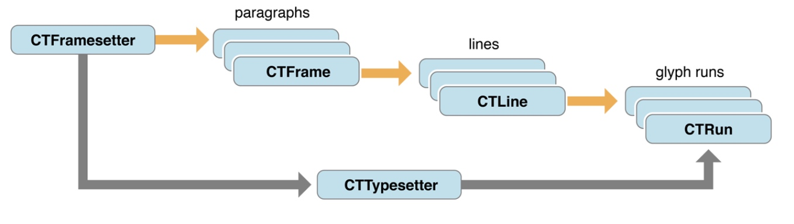
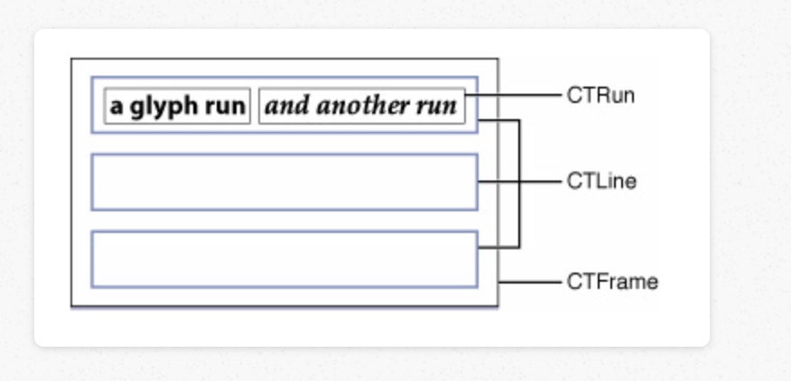
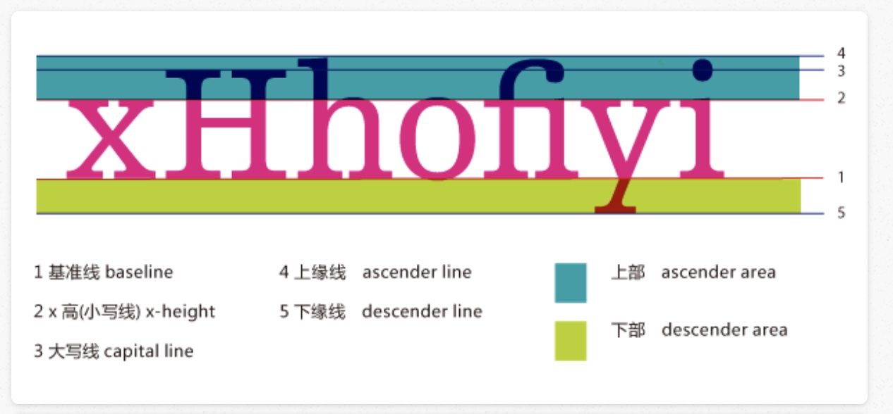
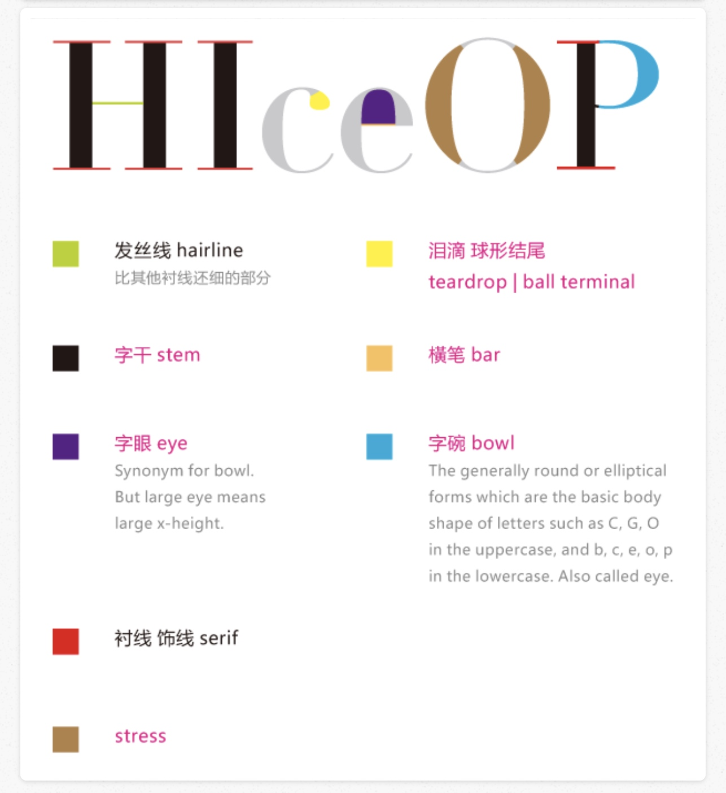
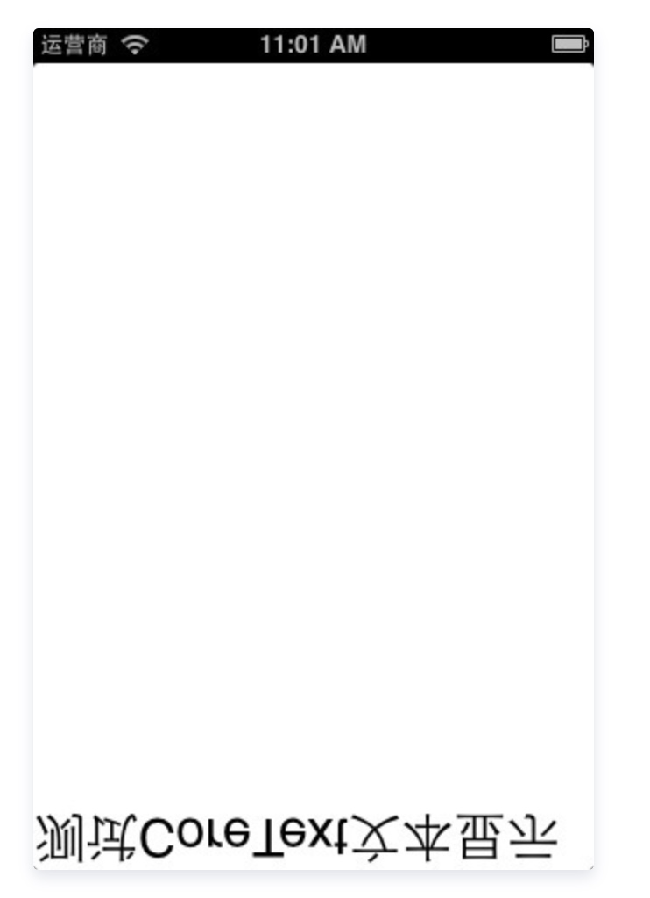
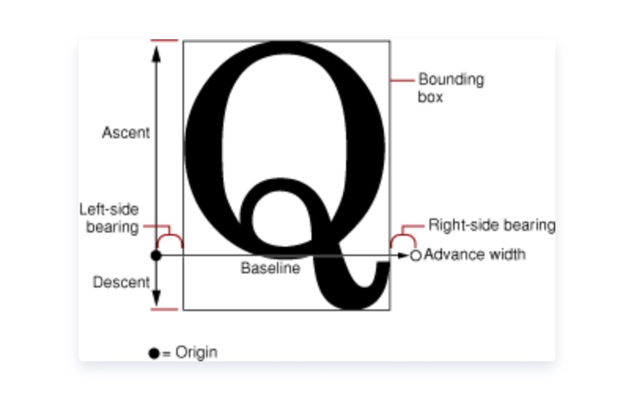
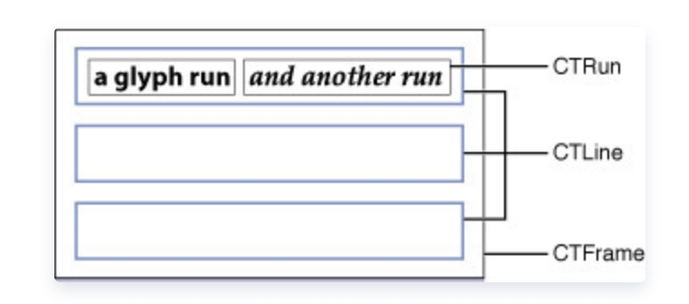

CoreText是Mac OS和iOS系统中处理文本的low-level API, 不管是使用OC还是swift, 实际我们使用CoreText都还是间接或直接使用C语言在写代码。CoreText是iOS和Mac OS中文本处理的根基, TextKit和WebKit都是构建于其上。
Core Text 的框架图

- CTFrame 可以看做是画布,画布的大小范围由 CTpath 决定
- CTFrame 由很多个 CTLine 组成,CTLine 表示为一行
- CTLine 有多个 CTRun 组成,CTRun相当于一行中的多个快,但是 CTRun 不需要我们创建,由 NSAttributedString 的属性决定,系统自动生成,每个 CTRun 对应不同的属性
- CTFramesetter 是一个工厂,创建 CTFrame,一个界面上可以有多个 CTFrame

使用 Core Text 步骤
- 使用Core Text首先要有一个显示的 string.
- 然后设置 string 的每个部分的样式->attributedString
- 生成 CTFramesetter
- 得到 CTFrame
- 绘制:CTFrameDraw
字体 CTFont
- 字体 Font: 是一系列字号,样式和磅值相同的字符
- 字面 Face: 是所有字号的磅值和格式的综合
- 磅值 Weight:用于描述字体的粗度
- 样式 Style: 字形有三种形式:Roman type是直体;oblique type是斜体;utakuc type是斜体兼曲线(比Roman type更像书法体)。
- 基线 BaseLine: 通常在x、v、b、m下的那条线 描边(Stroke):组成字符的线或曲线。可以加粗或改变字符形状
- 衬线 Serif: 用来使字符更可视的一条水平线。如字母左上角和下部的水平线。


在 Apple 的 SDK 中是这样定义这些属性的
const CFStringRef kCTCharacterShapeAttributeName;
//字体形状属性 必须是CFNumberRef对象默认为0，非0则对应相应的字符形状定义，如1表示传统字符形状
const CFStringRef kCTFontAttributeName;
//字体属性 必须是CTFont对象
const CFStringRef kCTKernAttributeName;
//字符间隔属性 必须是CFNumberRef对象
const CFStringRef kCTLigatureAttributeName;
//设置是否使用连字属性，设置为0，表示不使用连字属性。标准的英文连字有FI,FL.默认值为1，既是使用标准连字。也就是当搜索到f时候，会把fl当成一个文字。必须是CFNumberRef 默认为1,可取0,1,2
const CFStringRef kCTForegroundColorAttributeName;
//字体颜色属性 必须是CGColor对象，默认为black
const CFStringRef kCTForegroundColorFromContextAttributeName;
//上下文的字体颜色属性 必须为CFBooleanRef 默认为False
const CFStringRef kCTParagraphStyleAttributeName;
//段落样式属性 必须是CTParagraphStyle对象 默认为NIL
const CFStringRef kCTStrokeWidthAttributeName;
//笔画线条宽度 必须是CFNumberRef对象，默为0.0f，标准为3.0f
const CFStringRef kCTStrokeColorAttributeName;
//笔画的颜色属性 必须是CGColorRef 对象，默认为前景色
const CFStringRef kCTSuperscriptAttributeName;
//设置字体的上下标属性 必须是CFNumberRef对象 默认为0,可为-1为下标,1为上标，需要字体支持才行。如排列组合的样式Cn1
const CFStringRef kCTUnderlineColorAttributeName;
//字体下划线颜色属性 必须是CGColorRef对象，默认为前景色
const CFStringRef kCTUnderlineStyleAttributeName;
//字体下划线样式属性 必须是CFNumberRef对象,默为kCTUnderlineStyleNone 可以通过CTUnderlineStypleModifiers 进行修改下划线风格
const CFStringRef kCTVerticalFormsAttributeName;
//文字的字形方向属性 必须是CFBooleanRef 默认为false，false表示水平方向，true表示竖直方向
const CFStringRef kCTGlyphInfoAttributeName;
//字体信息属性 必须是CTGlyphInfo对象
const CFStringRef kCTRunDelegateAttributeName
//CTRun 委托属性 必须是CTRunDelegate对象
富文本
富文本格式(RTF)规范是为了便于在应用程序之间轻松转储格式化文本和图形的一种编码方法。
现在，用户可以利用特定转换软件，在不同系统如MS-DOS、Windows、OS/2、Macintosh和Power Macintosh的应用程序之间转移字处理文档。
RTF规范提供一种在不同的输出设备、操作环境和操作系统之间交换文本和图形的一种格式。
RTF使用ANSI, PC-8, Macintosh, 或IBM PC字符集控制文档的表示法和格式化，包括屏幕显示和打印
。凭借RTF规范，不同的操作系统和不同的软件程序创建的文档能够在这些操作系统和应用程序之间传递。
将一个格式化的文件转换为RTF文件的软件称为RTF书写器。
RTF书写器用于分离现有文本中的程序控制信息，并且生成一个包含文本和与之相关的RTF组的新文件。
将RTF文件转换成格式化文件的软件则称为RTF阅读器。
简单的来说,带有文字属性的字符串就是富文本
iOS 中包含 NSAttributedString 和 NSMutableAttributedString 两个类
富文本的基础使用方法:
- -initWithString 以字符串NSString 初始化一个富文本对象
- -setAttributes:range: 为富文本的一段范围添加一些属性,第一个参数是字典,第二个是 NSRange 范围
- -addAttribute:value:range 添加一个属性
- -addAttributes:range 添加多个属性
- -removeAttribute:range 移除属性
例如:
NSDictionary *dic = @{NSFontAttributeName:[UIFont fontWithName:@"Zapfino" size:20],NSForegroundColorAttributeName:[UIColor redColor],NSUnderlineStyleAttributeName:@(NSUnderlineStyleSingle)};
NSMutableAttributedString * attributeStr = [[NSMutableAttributedString alloc] initWithString:@"0我是一个富文本，9听说我有很多属性，19I will try。32这里清除属性."];
// 设置属性
[attributeStr setAttributes:dic range:NSMakeRange(0, attributeStr.length)];
// 添加属性
[attributeStr addAttribute:NSFontAttributeName value:[UIFont systemFontOfSize:30] range:NSMakeRange(9, 10)];
[attributeStr addAttribute:NSForegroundColorAttributeName value:[UIColor cyanColor] range:NSMakeRange(13, 13)];
// 添加多个属性
NSDictionary * dicAdd = @{NSBackgroundColorAttributeName:[UIColor yellowColor],NSLigatureAttributeName:@1};
[attributeStr addAttributes:dicAdd range:NSMakeRange(19, 13)];
// 移除属性
[attributeStr removeAttribute:NSFontAttributeName range:NSMakeRange(32, 9)];
UILabel * label = [[UILabel alloc] initWithFrame:CGRectMake(100, 100, 200, 400)];
label.numberOfLines = 0;
label.attributedText = attributeStr;
CoreText 绘制富文本
CoreText实现图文混排其实就是在富文本中 插入一个空白的图片占位符 的富文本字符串,通过代理设置相关的图片尺寸信息.根据从富文本得到的 frame,计算图片绘制的 frame 再绘制图片 这么一个过程
直接上代码
-(void)drawRect:(CGRect)rect
{
[super drawRect:rect];
CGContextRef context = UIGraphicsGetCurrentContext();
CGContextSetTextMatrix(context, CGAffineTransformIdentity); CGContextTranslateCTM(context, 0, self.bounds.size.height);
CGContextScaleCTM(context, 1.0, -1.0);
NSMutableAttributedString * attributeStr = [[NSMutableAttributedString alloc] initWithString:@"\n这里在测试图文混排，\n我是一个富文本"];
CTRunDelegateCallbacks callBacks;
memset(&callBacks,0,sizeof(CTRunDelegateCallbacks));
callBacks.version = kCTRunDelegateVersion1;
callBacks.getAscent = ascentCallBacks;
callBacks.getDescent = descentCallBacks;
callBacks.getWidth = widthCallBacks;
NSDictionary * dicPic = @{@"height":@129,@"width":@400};
CTRunDelegateRef delegate = CTRunDelegateCreate(& callBacks, (__bridge void *)dicPic);
unichar placeHolder = 0xFFFC;
NSString * placeHolderStr = [NSString stringWithCharacters:&placeHolder length:1];
NSMutableAttributedString * placeHolderAttrStr = [[NSMutableAttributedString alloc] initWithString:placeHolderStr];
CFAttributedStringSetAttribute((CFMutableAttributedStringRef)placeHolderAttrStr, CFRangeMake(0, 1), kCTRunDelegateAttributeName, delegate);
CFRelease(delegate);
[attributeStr insertAttributedString:placeHolderAttrStr atIndex:12];
CTFramesetterRef frameSetter = CTFramesetterCreateWithAttributedString((CFAttributedStringRef)attributeStr);
CGMutablePathRef path = CGPathCreateMutable();
CGPathAddRect(path, NULL, self.bounds);
NSInteger length = attributeStr.length;
CTFrameRef frame = CTFramesetterCreateFrame(frameSetter, CFRangeMake(0, length), path, NULL);
CTFrameDraw(frame, context);
UIImage * image = [UIImage imageNamed:@"bd_logo1"];
CGRect imgFrm = [self calculateImageRectWithFrame:frame];
CGContextDrawImage(context,imgFrm, image.CGImage);
CFRelease(frame);
CFRelease(path);
CFRelease(frameSetter);
}
static CGFloat ascentCallBacks(void * ref)
{
return [(NSNumber *)[(__bridge NSDictionary *)ref valueForKey:@"height"] floatValue];
}
static CGFloat descentCallBacks(void * ref)
{
return 0;
}
static CGFloat widthCallBacks(void * ref)
{
return [(NSNumber *)[(__bridge NSDictionary *)ref valueForKey:@"width"] floatValue];
}
-(CGRect)calculateImageRectWithFrame:(CTFrameRef)frame
{
NSArray * arrLines = (NSArray *)CTFrameGetLines(frame);
NSInteger count = [arrLines count];
CGPoint points[count];
CTFrameGetLineOrigins(frame, CFRangeMake(0, 0), points);
for (int i = 0; i < count; i ++) {
CTLineRef line = (__bridge CTLineRef)arrLines[i];
NSArray * arrGlyphRun = (NSArray *)CTLineGetGlyphRuns(line);
for (int j = 0; j < arrGlyphRun.count; j ++) {
CTRunRef run = (__bridge CTRunRef)arrGlyphRun[j];
NSDictionary * attributes = (NSDictionary *)CTRunGetAttributes(run); CTRunDelegateRef delegate = (__bridge CTRunDelegateRef)[attributes valueForKey:(id)kCTRunDelegateAttributeName];
if (delegate == nil) {
continue;
}
NSDictionary * dic = CTRunDelegateGetRefCon(delegate);
if (![dic isKindOfClass:[NSDictionary class]]) {
continue;
}
CGPoint point = points[i];
CGFloat ascent;
CGFloat descent;
CGRect boundsRun;
boundsRun.size.width = CTRunGetTypographicBounds(run, CFRangeMake(0, 0), &ascent, &descent, NULL);
boundsRun.size.height = ascent + descent;
CGFloat xOffset = CTLineGetOffsetForStringIndex(line, CTRunGetStringRange(run).location, NULL);
boundsRun.origin.x = point.x + xOffset;
boundsRun.origin.y = point.y - descent;
CGPathRef path = CTFrameGetPath(frame);
CGRect colRect = CGPathGetBoundingBox(path);
CGRect imageBounds = CGRectOffset(boundsRun, colRect.origin.x, colRect.origin.y);
return imageBounds;
}
}
return CGRectZero;
}
第一步是坐标系转换
CGContextRef context = UIGraphicsGetCurrentContext();
CGContextSetTextMatrix(context, CGAffineTransformIdentity);
CGContextTranslateCTM(context, 0, self.bounds.size.height);
CGContextScaleCTM(context, 1.0, -1.0);
coreText 起初是为OSX设计的，而OSX得坐标原点是左下角，y轴正方向朝上。iOS中坐标原点是左上角，y轴正方向向下。
若不进行坐标转换，则文字从下开始，还是倒着的

CGContextRef context = UIGraphicsGetCurrentContext();//获取当前绘制上下文
首选拿到上下文,因为所有的绘制操作都是在上下文上进行的,然后剩下的三句:
CGContextSetTextMatrix(context, CGAffineTransformIdentity);//设置字形的变换矩阵为不做图形变换
CGContextTranslateCTM(context, 0, self.bounds.size.height);//平移方法，将画布向上平移一个屏幕高
CGContextScaleCTM(context, 1.0, -1.0);//缩放方法，x轴缩放系数为1，则不变，y轴缩放系数为-1，则相当于以x轴为轴旋转180度
正如之上的背景说的，coreText使用的是系统坐标，然而我们平时所接触的iOS的都是屏幕坐标，所以要将屏幕坐标系转换系统坐标系，这样才能与我们想想的坐标互相对应。
事实上呢，这三句是翻转画布的固定写法，这三句你以后会经常看到的。
图片的代理设置
事实上，图文混排就是在要插入图片的位置插入一个富文本类型的占位符。通过CTRUNDelegate设置图片
NSMutableAttributedString * attributeStr = [[NSMutableAttributedString alloc] initWithString:@"\n这里在测试图文混排，\n我是一个富文本"];//这句不用我多说吧，最起码得有个富文本啊才能插入不是。
/*
设置一个回调结构体，告诉代理该回调那些方法
*/
CTRunDelegateCallbacks callBacks;//创建一个回调结构体，设置相关参数
memset(&callBacks,0,sizeof(CTRunDelegateCallbacks));//memset将已开辟内存空间 callbacks 的首 n 个字节的值设为值 0, 相当于对CTRunDelegateCallbacks内存空间初始化
callBacks.version = kCTRunDelegateVersion1;//设置回调版本，默认这个
callBacks.getAscent = ascentCallBacks;//设置图片顶部距离基线的距离
callBacks.getDescent = descentCallBacks;//设置图片底部距离基线的距离
callBacks.getWidth = widthCallBacks;//设置图片宽度
字形:

这是一个 CTRun 的尺寸图,我们绘制图片的时候,实际上是在一个 CTRun 中绘制这个图片,CTRun 的绘制坐标系中,会以 origin 点作为原点进行绘制
基线为过原点的x轴，ascent即为CTRun顶线距基线的距离，descent即为底线距基线的距离。
我们绘制图片应该从原点开始绘制，图片的高度及宽度及CTRun的高度及宽度，我们通过代理设置CTRun的尺寸间接设置图片的尺寸。
// 创建一个代理
NSDictionary * dicPic = @{@"height":@129,@"width":@400};//创建一个图片尺寸的字典，初始化代理对象需要
CTRunDelegateRef delegate = CTRunDelegateCreate(& callBacks, (__bridge void *)dicPic);//创建代理
上面只是设置了回调结构体，然而我们还没有告诉这个代理我们要的图片尺寸。
所以这句话就在设置代理的时候绑定了一个返回图片尺寸的字典。
事实上此处你可以绑定任意对象。此处你绑定的对象既是回调方法中的参数ref。
static CGFloat ascentCallBacks(void * ref)
{
return [(NSNumber *)[(__bridge NSDictionary *)ref valueForKey:@"height"] floatValue];
}
static CGFloat descentCallBacks(void * ref)
{
return 0;
}
static CGFloat widthCallBacks(void * ref)
{
return [(NSNumber *)[(__bridge NSDictionary *)ref valueForKey:@"width"] floatValue];
}
上文说过，ref既是创建代理是绑定的对象。所以我们在这里，从字典中分别取出图片的宽和高。
值得注意的是，由于是c的方法，所以也没有什么对象的概念。是一个指针类型的数据。不过oc的对象其实也就是c的结构体。我们可以通过类型转换获得oc中的字典。
__bridge既是C的结构体转换成OC对象时需要的一个修饰词
图片的插入
首先创建一个富文本类型的图片占位符，绑定我们的代理
unichar placeHolder = 0xFFFC;//创建空白字符
NSString *placeHolderStr = [NSString stringWithCharacters:&placeHolder length:1];//以空白字符生成字符串
NSMutableAttributedString *placeHolderAttrStr = [[NSMutableAttributedString alloc] initWithString:placeHolderStr];//用字符串初始化占位符的富文本
CFAttributedStringSetAttribute((CFMutableAttributedStringRef)placeHolderAttrStr, CFRangeMake(0, 1), kCTRunDelegateAttributeName, delegate);//给字符串中的范围中字符串设置代理
CFRelease(delegate);//释放（__bridge进行C与OC数据类型的转换，C为非ARC，需要手动管理）
为什么最后需要是否?
因为进行了类型转换之后就不属于对象了，也不再归自动引用计数机制管理了，所以你得手动管理。
然后将占位符插入我们的富文本中
[attributeStr insertAttributedString:placeHolderAttrStr atIndex:12];//将占位符插入原富文本
至此,我们已经生成好了我们要的带有图片信息的富文本了,接下来就是要在画布上绘制这个富文本了
绘制
绘制分成两个部分,文本绘制,图片绘制
因为富文本中我们添加的图片只是一个带有图片尺寸的空白占位符,绘制的时候也是只会绘制出响应尺寸的空白占位符,所以什么也显示不了
绘制图片,需要拿到占位符的坐标,在占位符的地方绘制相应大小的图片.
绘制文本
CTFramesetterRef frameSetter = CTFramesetterCreateWithAttributedString((CFAttributedStringRef)attributeStr);//一个frame的工厂，负责生成frame
CGMutablePathRef path = CGPathCreateMutable();//创建绘制区域
CGPathAddRect(path, NULL, self.bounds);//添加绘制尺寸
NSInteger length = attributeStr.length;
CTFrameRef frame = CTFramesetterCreateFrame(frameSetter, CFRangeMake(0,length), path, NULL);//工厂根据绘制区域及富文本（可选范围，多次设置）设置frame
CTFrameDraw(frame, context);//根据frame绘制文字
frameSetter是根据富文本生成的一个frame生成的工厂，你可以通过framesetter以及你想要绘制的富文本的范围获取该CTRun的frame。
但是你需要注意的是，获取的frame是仅绘制你所需要的那部分富文本的frame。即当前情况下，你绘制范围定为（10，1），那么你得到的尺寸是只绘制（10，1）的尺寸，他应该从屏幕左上角开始（因为你改变了坐标系），而不是当你绘制全部富文本时他该在的位置。
然后建立一会绘制的尺寸，实际上就是在指定你的绘制范围。
接着生成整个富文本绘制所需要的frame。因为范围是全部文本，所以获取的frame即为全部文本的frame.最后，根据你获得的frame，绘制全部富文本。
绘制图片
绘制图片我们只需要使用:
CGContextDrawImage(context,imgFrm, image.CGImage);//绘制图片
我们可以看到这个方法有三个参数，分别是context，frame，以及image。
要什么就给他什么好咯，context和image都好说，context就是当前的上下文，最开始获得那个。image就是你要添加的那个图片，不过是CGImage类型。通过UIImage转出CGImage就好了，我们重点讲一下frame的获取。
NSArray * arrLines = (NSArray *)CTFrameGetLines(frame);//根据frame获取需要绘制的线的数组
NSInteger count = [arrLines count];//获取线的数量
CGPoint points[count];//建立起点的数组（cgpoint类型为结构体，故用C语言的数组）
CTFrameGetLineOrigins(frame, CFRangeMake(0, 0), points);//获取起点
第一句就是获取绘制中的所有 CTLine;

- CTLine 可以看做Core Text绘制中的一行的对象 通过它可以获得当前行的line ascent,line descent ,line leading,还可以获得Line下的所有Glyph Runs
- CTRun 或者叫做 Glyph Run，是一组共享相同attributes（属性）的字形的集合体
一个CTFrame有几个CTLine组成，有几行文字就有几行CTLine。一个CTLine有包含多个CTRun，一个CTRun是所有属性都相同的那部分富文本的绘制单元。所以CTRun是CTFrame的基本绘制单元。
接着说我们的代码。
为什么我获取的数组需要进行类型转换呢？因为CTFrameGetLines（）返回值是CFArrayRef类型的数据。就是一个c的数组类型吧，暂且先这么理解，所以需要转换。
那为什么不用__bridge呢？记得么，我说过，本身就传地址的数据是不用桥接的。就是这样。
然后获取数组的元素个数。有什么用呢，因为我们要用到每个CTLine的原点坐标进行计算。每个CTLine都有自己的origin。所以要生成一个相同元素个数的数组去盛放origin对象。
然后用CTFrameGetLineOrigins获取所有原点。
到此，我们计算frame的准备工作完成了。才完成准备工作。
计算 frame
思路呢，就是遍历我们的frame中的所有CTRun，检查他是不是我们绑定图片的那个，如果是，根据该CTRun所在CTLine的origin以及CTRun在CTLine中的横向偏移量计算出CTRun的原点，加上其尺寸即为该CTRun的尺寸。
for (int i = 0; i < count; i ++) {//遍历线的数组
CTLineRef line = (__bridge CTLineRef)arrLines[i];
NSArray * arrGlyphRun = (NSArray *)CTLineGetGlyphRuns(line);//获取GlyphRun数组（GlyphRun：高效的字符绘制方案）
for (int j = 0; j < arrGlyphRun.count; j ++) {//遍历CTRun数组
CTRunRef run = (__bridge CTRunRef)arrGlyphRun[j];//获取CTRun
NSDictionary * attributes = (NSDictionary *)CTRunGetAttributes(run);//获取CTRun的属性
CTRunDelegateRef delegate = (__bridge CTRunDelegateRef)[attributes valueForKey:(id)kCTRunDelegateAttributeName];//获取代理
if (delegate == nil) {//非空
continue;
}
NSDictionary * dic = CTRunDelegateGetRefCon(delegate);//判断代理字典
if (![dic isKindOfClass:[NSDictionary class]]) {
continue;
}
CGPoint point = points[i];//获取一个起点
CGFloat ascent;//获取上距
CGFloat descent;//获取下距
CGRect boundsRun;//创建一个frame
boundsRun.size.width = CTRunGetTypographicBounds(run, CFRangeMake(0, 0), &ascent, &descent, NULL);
boundsRun.size.height = ascent + descent;//取得高
CGFloat xOffset = CTLineGetOffsetForStringIndex(line, CTRunGetStringRange(run).location, NULL);//获取x偏移量
boundsRun.origin.x = point.x + xOffset;//point是行起点位置，加上每个字的偏移量得到每个字的x
boundsRun.origin.y = point.y - descent;//计算原点
CGPathRef path = CTFrameGetPath(frame);//获取绘制区域
CGRect colRect = CGPathGetBoundingBox(path);//获取剪裁区域边框
CGRect imageBounds = CGRectOffset(boundsRun, colRect.origin.x, colRect.origin.y);
return imageBounds;
外层for循环呢，是为了取到所有的CTLine。
类型转换什么的我就不多说了，然后通过CTLineGetGlyphRuns获取一个CTLine中的所有CTRun。
里层for循环是检查每个CTRun。
通过CTRunGetAttributes拿到该CTRun的所有属性。
通过kvc取得属性中的代理属性。
接下来判断代理属性是否为空。因为图片的占位符我们是绑定了代理的，而文字没有。以此区分文字和图片。
如果代理不为空，通过CTRunDelegateGetRefCon取得生成代理时绑定的对象。判断类型是否是我们绑定的类型，防止取得我们之前为其他的富文本绑定过代理。
如果两条都符合，ok，这就是我们要的那个CTRun。
开始计算该CTRun的frame吧。
获取原点和获取宽高被。
通过CTRunGetTypographicBounds取得宽，ascent和descent。有了上面的介绍我们应该知道图片的高度就是ascent+descent了吧。
接下来获取原点。
CTLineGetOffsetForStringIndex获取对应CTRun的X偏移量。
取得对应CTLine的原点的Y，减去图片的下边距才是图片的原点，这点应该很好理解。
至此，我们已经获得了图片的frame了。因为只绑定了一个图片，所以直接return就好了，如果多张图片可以继续遍历返回数组。
获取到图片的frame，我们就可以绘制图片了，用上面介绍的方法。
最后记得释放
CFRelease(frame);
CFRelease(path);
CFRelease(frameSetter);